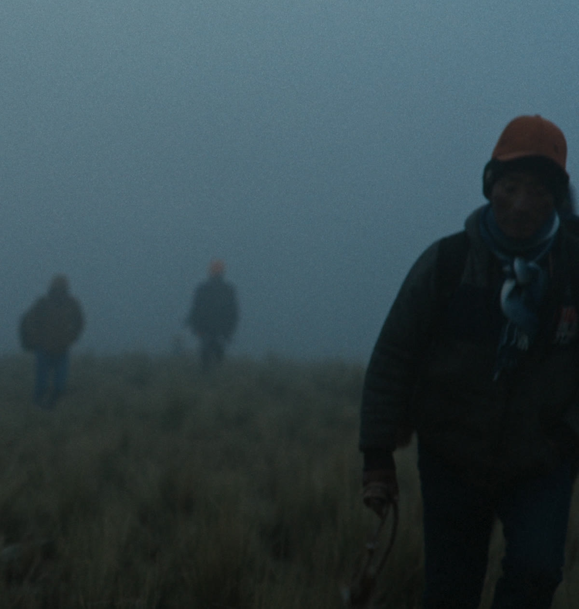
The Battle
of Chiaraje
Produced by Fisherman & Trout, Anibal Lozano Herrera, Elard Velasco, Etienne Talbot Director of Photography Julio Gonzales Edited by Alex Fischman Cárdenas, Dominik Braz Bittrich Color by Connor Baily Sound Design by Nicolas Svetliza Directed by Alex Fischman Cárdenas
Logline
After the birth of his first child, a veteran warrior returns to the Battle of Chiaraje, torn between the tradition that defines him and the family he could leave behind.
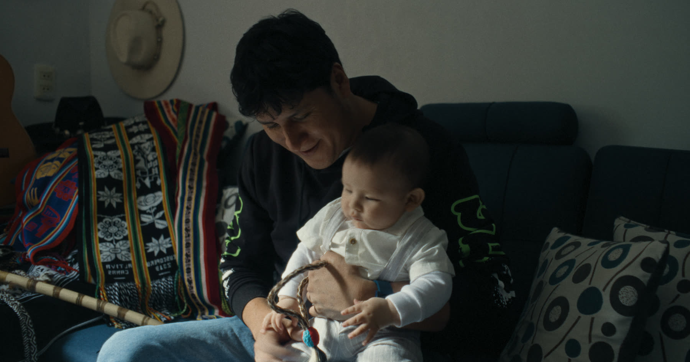
(01)(01) Elard Velasco with his son.
03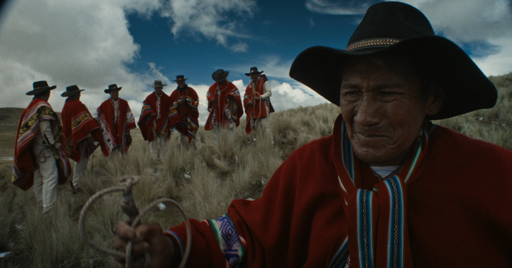
(02)(02) Warriors of Canas, with slings and whips.
04The Battle
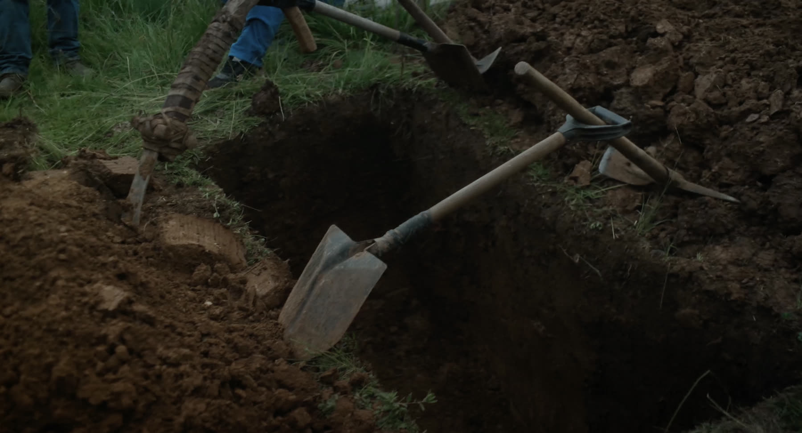
The Battle of Chiaraje is an annual ritual that still takes place high in the mountains of Cusco, Peru. Every year two towns — more than a thousand people — meet on the summit of Chiaraje mountain, 4,500 meters above sea level, to recreate an ancient battle. They arm themselves with slingshots, whips, rocks, and horses. It is a war that serves no purpose beyond the act of war itself, fought willingly, even eagerly.
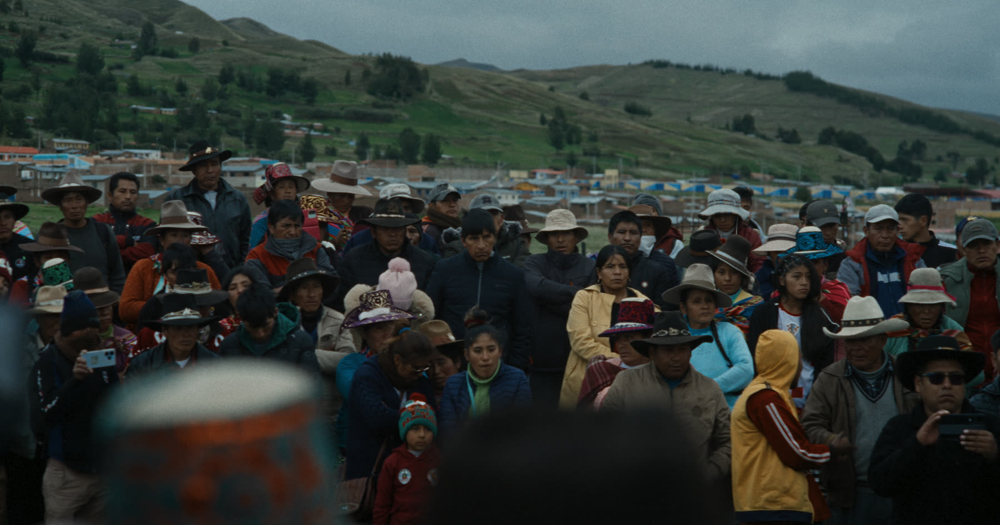
Injuries are frequent. Death is rare.
There are no legal consequences for killing someone during battle.
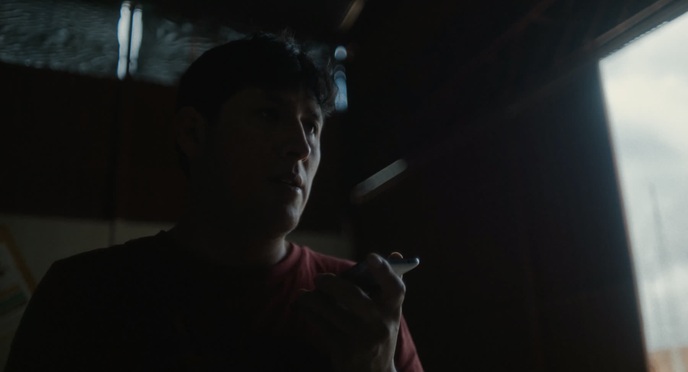
(03)(03) Elard Velasco.
07The Characters
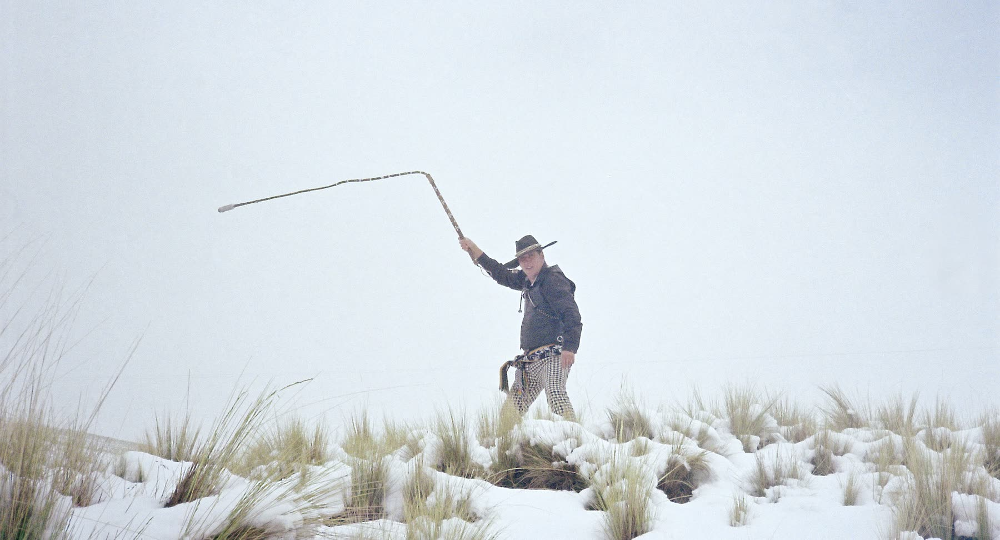
(04)The film follows Elard Velasco, a twenty-year veteran of the battle. The birth of his first son has put his future in it in question. Travelling back to Canas in the days before, he asks whether to keep fighting or stay on the sidelines.
(04) A whip, cracked on the mountain.
The Community
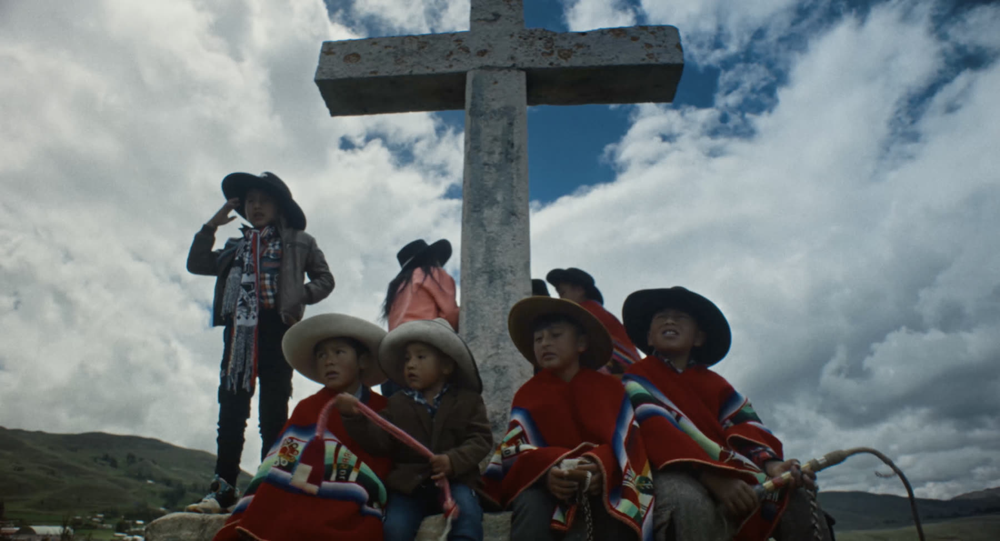
(05)The film also follows the people around him: his father, who prays for him to be safe; veterans who will never stop going; children who practice with water bottles on sticks. We see how the community prepares in the days before.
(05) The community at the cross.
(06) His father, who prays for him to be safe.
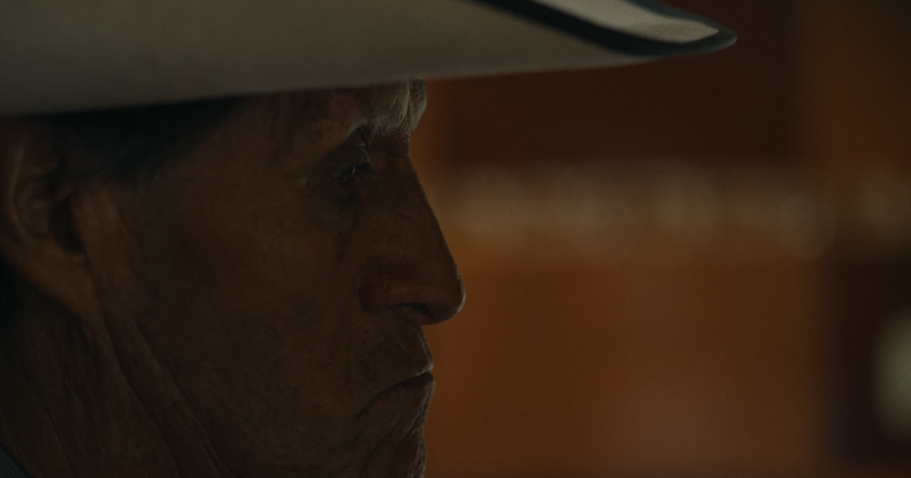
(06)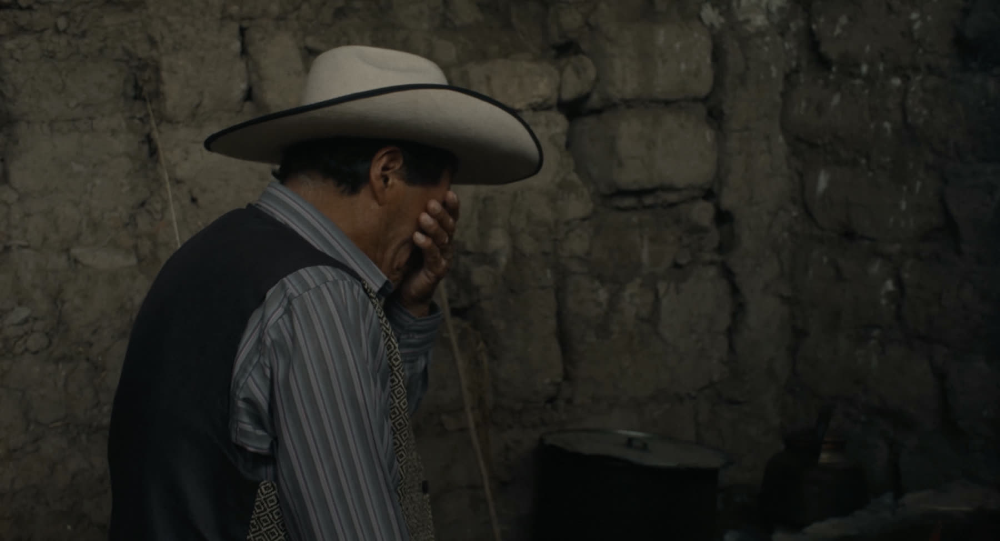
(07)(07) At home in Canas, the days before.
11Director's Statement
As a Peruvian outsider to the battle, my first reaction was disbelief — why would someone willingly do this? That question became the starting point for this film.
When I began interviewing participants, the answer was both simple and profound: they love the battle. For some it is the adrenaline. For others, belonging to something greater than themselves. For others still, a way to channel rage in a manner that is socially accepted, even celebrated.
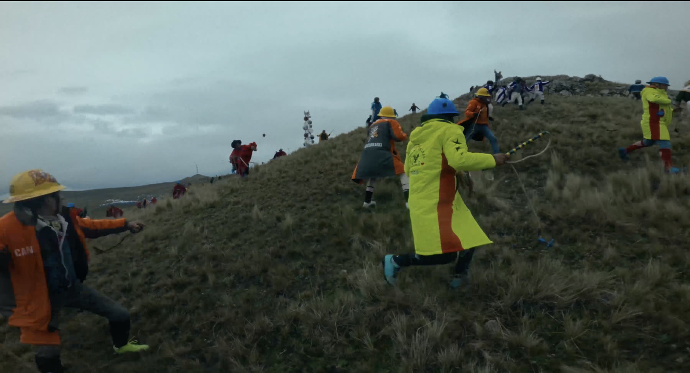
“In Chiaraje,
life is worth nothing.”
Director's Statement
The deeper I went, the clearer it became that we all have our own version of this battle. The unexamined behaviour, the self-destructive tendencies that from the outside are obviously dangerous, but that we cannot see in ourselves when we stand too close to them.
That is why my goal was never to judge this behaviour, only to observe it — and why the film carries no music. It weaves together the perspectives of the young, the seasoned, and the ones who have lost, to give us a portrait of a community and its tradition.
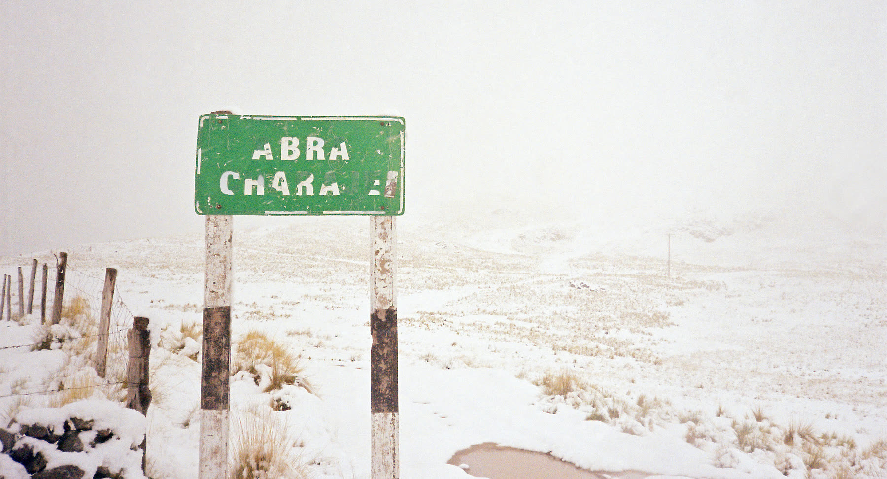
(08)(08) The pass at Chiaraje.
15Selected Filmography
The Battle of Chiaraje
(2026)
Documentary · In production
¡PIKA!
(2025)
Sundance · MIFF · Sitges · Palm Springs ShortFest · Vimeo Staff Pick
Ovejas y Lobos
(2024)
Vimeo Staff Pick · Clermont-Ferrand · Raindance · ShortFest Palm Springs · DokuFest · Lima (Audience & Jury Award) · Shorts México (Best Short Film) · AFI Fest · Zaragoza (Best Short Film) · Gibara (Youth Jury Award) · Odense
Starr
(2022)
Vimeo Staff Pick
Teeth
(2021)
Vimeo Staff Pick
Alienación
(2019)
Aesthetica · Rhode Island International Film Festival
La Vieja Quinta
(2015)
Hollyshorts · Moscow International Film Festival · Lima International Film Festival
Director
Alex Fischman
Cárdenas
A Peruvian writer, director and producer. His short films have premiered at Sundance, Clermont-Ferrand and Sitges, and earned Vimeo Staff Pick recognition. He is represented by WME and Industry Entertainment.
Credits
Directed by
Alex Fischman Cárdenas
Produced by
Alex Fischman Cárdenas
Trout Cohen
Anibal Lozano Herrera
Elard Velasco
Etienne Talbot
Director of Photography
Julio Gonzales
Camera Assistant
Anibal Lozano Herrera
Edited by
Alex Fischman Cárdenas
Dominik Braz Bittrich
Color by
Connor Baily
Sound Design by
Nicolas Svetliza
Starring
Elard Velasco
Vasco Velasco
Papá Aurelio
Mamá Epifania
Efraín Laucata Alvarez
Abel Laucata Alvarez
Mario Choque Gutiérrez
Yuri Arizapana
Fredy Gutierrez Puma
Yosman Gutiérrez Puma
Joel Gutierrez Puma
Erlinda Gutiérrez Puma
Vilma Gutierrez Puma
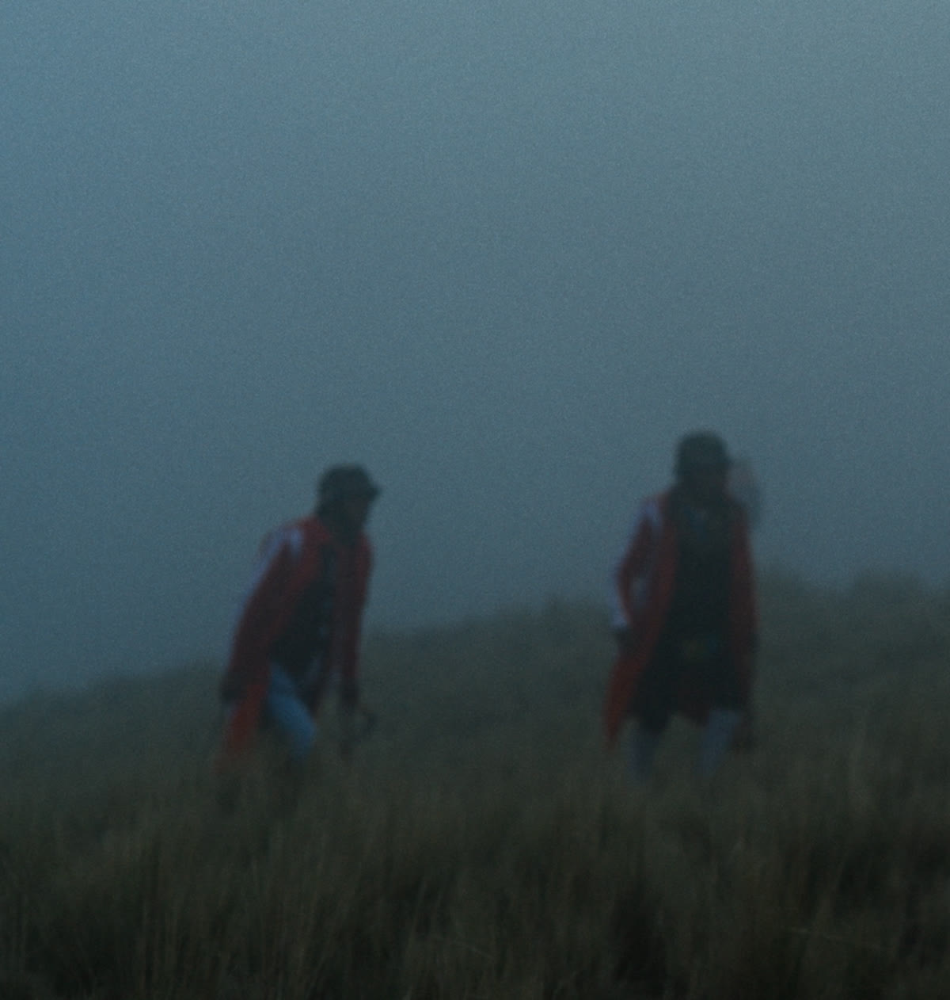